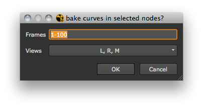

This topic covers how to access animation.
In order to set keys, a knob must be set to accept animation:
node = nuke.createNode( 'Blur' )
k = node['size']
k.setAnimated()
Once this is done, the regular setValue and setValueAt methods set keys:
k.setValue( 5 )
The above example sets a keyframe at the current frame with a value of 5. The following example sets two more keys at frame 10 and 100 with values of 55 and 66 respectively:
k.setValueAt( 55, 10 )
k.setValueAt( 66, 100 )
If the knob is an array knob, this sets the first field/channel to 77 and the second to 88 at frame 100:
k.setValueAt( 77, 100, 0 )
k.setValueAt( 88, 100, 1 )
To determine if a knob is animated, you could use the following:
node = nuke.createNode( 'Blur' )
k = node['size']
k.isAnimated()
isAnimated() returns True if there is any sort of animation in the knob, including expressions. The following shows you if the knob has an expression:
k.hasExpression()
To get to a knob’s animation curve:
animCurve = k.animation( 0 ) #ANIMATION IN THE FIRST FIELD (X VALUE)
animCurve = k.animation( 1 ) #ANIMATION IN THE SECOND FIELD (Y VALUE)
Or to get all the animation curves that might be inside a knob:
allCurves = k.animations()
To print all the keys and their respective values for a given animation curve:
for key in animCurve.keys():
xValue = key.x
yValue = key.y
print 'ket at %s has value %s' % ( xValue, yValue )
# Result:
ket at 1.0 has value 5.0
ket at 10.0 has value 55.0
ket at 100.0 has value 77.0
To clear all keys in all animation curves in a knob:
for curve in k.animations():
curve.clear()
This script bakes all knobs that carry expressions into keyframed animation. Let’s start by creating the main function that gets the frame range and loops through selected nodes:
def bakeSelectedNodes():
ret = nuke.getFramesAndViews( 'bake curves in selected nodes?', '%s-%s' % (nuke.root().firstFrame(), nuke.root().lastFrame()) )
This pops up a simple panel to get the requested views and frame range.
Next, check if the return value is useful to us and if so, store the requested frame range and views. The FrameRange object is very handy to convert a string like “1-100” to a valid frame range:
def bakeSelectedNodes():
ret = nuke.getFramesAndViews( 'bake curves in selected nodes?', '%s-%s' % (nuke.root().firstFrame(), nuke.root().lastFrame()) )
if not ret:
return
fRange = nuke.FrameRange( ret[0] )
views = ret[1]
Now loop through the selected nodes and run bakeExpressionKnobs on each one, which we have yet to write:
def bakeSelectedNodes():
ret = nuke.getFramesAndViews( 'bake curves in selected nodes?', '%s-%s' % (nuke.root().firstFrame(), nuke.root().lastFrame()) )
if not ret:
return
fRange = nuke.FrameRange( ret[0] )
views = ret[1]
for n in nuke.selectedNodes():
bakeExpressionKnobs( n, fRange.first(), fRange.last(), fRange.increment(), views )
Put this function aside until we have finished writing the backExpreesionKnobs function. But before we do that, let’s create two little helper functions:
getCurves - returns all animation curves for a given knob. It operates on a single knob, loops through the requested views, and collects all animation curves and then returns them:
def getCurves( knob, views ):
curves = []
for v in views:
curves.extend( knob.animations( v ) )
return curves
bakeCurve - bakes an expression curve into a keyframed curve. This loops through the given range of frames and sets keys on the curve for the value at that frame. In the last line, the expression itself is removed and swapped for the curves which tells NUKE that the keyframe values should be used:
def bakeCurve( curve, first, last, inc ):
for f in xrange( first, last, inc ):
curve.setKey( f, curve.evaluate( f ) )
curve.setExpression( 'curve' )
With our little helpers in place, we can now write the missing piece which identifies all knobs with expressions and operates on them. Create a new function called bakeExpressionKnobs and assign 5 arguments:
node - the node to examine for expression knobs
first - the first frame to set a keyframe on
last - the last frame to set a keyframe on
inc - the increment to use for the frame range
views - the views to examine:
def bakeExpressionKnobs( node, first, last, inc, views ):
expKnobs = [ k for k in node.knobs().values() if k.hasExpression() ]
This is a good example of why Python’s list comprehension is awesome - in a single line we can grab all knobs that have expressions in them. Now we loop through the found expression knobs and run getCurves on them to get all animation curves that may be inside the knob:
allCurves = []
for k in expKnobs:
allCurves += getCurves( k, views )
After collecting all the curves, we now simply pull the trigger on each of them using the bakeCurves function:
for c in allCurves:
bakeCurve( c, first, last, inc )
This is the complete bakeExpressionKnobs() function:
def bakeExpressionKnobs( node, first, last, inc, views ):
'''bake all knobs in node that carry expressions'''
# GET ALL KNOBS WITH EXPRESSIONS IN THEM
expKnobs = [ k for k in node.knobs().values() if k.hasExpression() ]
# GET ALL CURVES INSIDE THAT KNOB INCLUDING SPLIT FIELDS AND VIEWS
allCurves = []
for k in expKnobs:
allCurves += getCurves( k, views )
# BAKE ALL CURVES
for c in allCurves:
bakeCurve( c, first, last, inc )
And here is the whole thing.
import nuke
def bakeCurve( curve, first, last, inc ):
'''bake an expresison curve into a keyframes curve'''
for f in xrange( first, last, inc ):
curve.setKey( f, curve.evaluate( f ) )
curve.setExpression( 'curve' )
####################################################
def getCurves( knob, views ):
'''return a list of all animation curves found in the given knob'''
curves = []
for v in views:
curves.extend( knob.animations( v ) )
return curves
####################################################
def bakeExpressionKnobs( node, first, last, inc, views ):
'''bake all knobs in node that carry expressions'''
# GET ALL KNOBS WITH EXPRESSIONS IN THEM
expKnobs = [ k for k in node.knobs().values() if k.hasExpression() ]
# GET ALL CURVES INSIDE THAT KNOB INCLUDING SPLIT FIELDS AND VIEWS
allCurves = []
for k in expKnobs:
allCurves += getCurves( k, views )
# BAKE ALL CURVES
for c in allCurves:
bakeCurve( c, first, last, inc )
####################################################
def bakeDependentNodes():
'''Add this to onUserDestroy callback - not yet implemented'''
parentNode = nuke.thisNode() # THIS IS GIVEN TO US BY THE CALLBACK, i.e. WHEN A NODE IS DELETED - WELL, NOT YET
depNodes = parentNode.dependent( nuke.EXPRESSIONS )
ret = nuke.getFramesAndViews( 'bake curves in dependent nodes?', '%s-%s' % (parentNode.firstFrame(), parentNode.lastFrame()) )
if not ret:
return
fRange = nuke.FrameRange( ret[0] )
views = ret[1]
for n in depNodes:
bakeExpressionKnobs( n, fRange.first(), fRange.last(), fRange.increment(), views )
####################################################
def bakeSelectedNodes():
'''bake selected nodes' knobs that carry expressions'''
ret = nuke.getFramesAndViews( 'bake curves in selected nodes?', '%s-%s' % (nuke.root().firstFrame(), nuke.root().lastFrame()) )
if not ret:
return
fRange = nuke.FrameRange( ret[0] )
views = ret[1]
for n in nuke.selectedNodes():
bakeExpressionKnobs( n, fRange.first(), fRange.last(), fRange.increment(), views )
Select nodes that carry expressions and run:
bakeSelectedNodes()